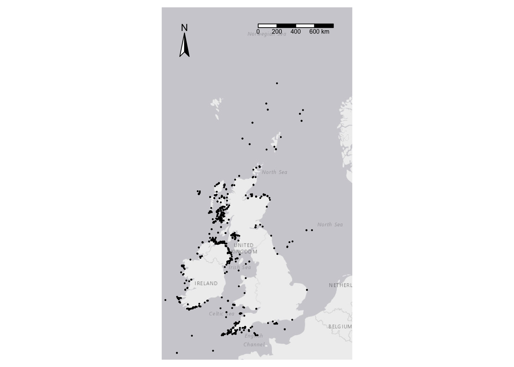

library(rgbif)
library(tidyverse)
library(here)
library(sf)
library(leaflet)
library(tmap)GBIF Occurrences
You can use this script to search for a taxon on GBIF and then download the data directly into R for subsequent analysis there. You can also save the data as a csv file for later analysis or as a Shapefile or GeoPackage for inclusion as a vector point layer in a GIS application.
Preliminary.
You need to have registered with GBIF manually ie not using your Google, Apple , ORCID or similar ID. For this script to work, you need to know your GBIF username and password, and the email address you use to communicate with GBIF. All of these can be found on your GBIF profile.
In the following, work from the top downwards, implementing each code chunk in sequence.
Step One
What is the scientific name of the species for which you want to find occurrences?
scientific_name <- "Cetorhinus maximus"We give this to GBIF and let it look through its records to find the unique species key for this species. If it cannot find it, check if you have spelled the scientific name correctly.
species_key <-name_backbone(scientific_name) |>
select(speciesKey) |>
pull()Alternatively, you can find the species key on GBIF’s site in various ways, for example by doing an occurrence search then looking at the final digits of the url of the species page you end up on. I did a search on puffins Fratercula arctica and ended up on this page for them. The url of that page is https://www.gbif.org/species/2481353 and the species ID in GBIF for puffins is 2481353.
Step Two: Search on GBIF for occurrences of the selected taxon
Be as selective as you can in order to avoid getting huge downloads (there are over 3 billion records on GBIF in total!). You can select by date, area, country - many things. For help on the available keys and pred() functions, type ?pred in the console pane.
gbif_download <- occ_download(pred("speciesKey",species_key),
pred_default(),
pred_gte("year",1900), # try also gt, lt, lte etc
pred_in("country",c("IE","GB")), # use a two letter country ID or combination of IDs
# user="your GBIF username",
# pwd = "your GBIF password",
# email = "the email you have used on your GBIF profile",
format = "SIMPLE_CSV")This chunk will tell you when the download is done. That might take a few minutes, or even longer for large downloads. Most downloads are complete within 15 minutes.
occ_download_wait(gbif_download)<<gbif download metadata>>
Status: SUCCEEDED
DOI: 10.15468/dl.va96ph
Format: SIMPLE_CSV
Download key: 0030906-251009101135966
Created: 2025-10-17T19:10:09.258+00:00
Modified: 2025-10-17T19:11:23.254+00:00
Download link: https://api.gbif.org/v1/occurrence/download/request/0030906-251009101135966.zip
Total records: 1102When the download is ready, read the data into a data frame
# create folder <scientific name> in /output
new_dir_path<-here("output",scientific_name)
dir.create(new_dir_path)
download_df <- occ_download_get(gbif_download, overwrite = TRUE) |>
occ_download_import()
# remove the downloaded zip file
download_key <- occ_download_meta(gbif_download)$key
file.remove(here(paste0(download_key,".zip")))[1] TRUE# save df as csv file in output/<scientific name>
filepath <- here("output",scientific_name, str_c(scientific_name,".csv"))
write_csv(download_df,filepath)The data are now in your R session as a data frame called download_df. Scroll across the columns and see what you have got.
Open the csv file in Excel
Skip this section if you don’t want to do this.
How do I open tab-delimited CSV files downloaded from GBIF.org in Excel?
If you’re using Excel on a Mac
- Open Excel
- Create a new empty spreadsheet (File → New)
- Import text file (Data → Get Data → From File → From Text/CSV)
- Select the downloaded CSV file (e.g. 0000822-180131172636756.csv)
- Select “Comma” as Delimiter and “Unicode (UTF-8)” as File Origin
- Click Load
If you’re using Excel in Windows
- Open Excel
- Create a new empty spreadsheet (File → New)
- Click the Data tab
- From “Get External Data”, click From text
- Select the downloaded CSV file (e.g. 0000822-180131172636756.csv)
- Click Import
- Select “Delimited” as Data Type and “Unicode (UTF-8)” as File Origin
- Click Finish
- Click OK to import data into current sheet
The above procedure also works for occurrence.txt files from Darwin Core Archives.
Convert data frame to spatial object in WGS84
We can use the sf package to convert the data frame we have just created in to a spatial object, that we can then write out as a Geopackage or a shapefile, for inclusion in a GIS as a vector layer.
We need to tell it which columns are the lon and lat. The default in GBIF downloads is that they are called decimalLongitude and decimalLatitude, so we will use those names. Amend the code below if the names are any different in your download, for some reason.
download_sf <- download_df |>
st_as_sf(coords = c("decimalLongitude", "decimalLatitude"), crs = 4326) |>
st_cast("POINT")
download_sfSimple feature collection with 1102 features and 48 fields
Geometry type: POINT
Dimension: XY
Bounding box: xmin: -11.77 ymin: 48.767 xmax: 2.2431 ymax: 63.0206
Geodetic CRS: WGS 84
# A tibble: 1,102 × 49
gbifID datasetKey occurrenceID kingdom phylum class order family genus
<int64> <chr> <chr> <chr> <chr> <chr> <chr> <chr> <chr>
1 812096452 870afa50-180e… "" Animal… Chord… Elas… Lamn… Cetor… Ceto…
2 812096450 870afa50-180e… "" Animal… Chord… Elas… Lamn… Cetor… Ceto…
3 812096449 870afa50-180e… "" Animal… Chord… Elas… Lamn… Cetor… Ceto…
4 812096448 870afa50-180e… "" Animal… Chord… Elas… Lamn… Cetor… Ceto…
5 812096447 870afa50-180e… "" Animal… Chord… Elas… Lamn… Cetor… Ceto…
6 812096446 870afa50-180e… "" Animal… Chord… Elas… Lamn… Cetor… Ceto…
7 812096445 870afa50-180e… "" Animal… Chord… Elas… Lamn… Cetor… Ceto…
8 812096444 870afa50-180e… "" Animal… Chord… Elas… Lamn… Cetor… Ceto…
9 812096443 870afa50-180e… "" Animal… Chord… Elas… Lamn… Cetor… Ceto…
10 812096411 870afa50-180e… "" Animal… Chord… Elas… Lamn… Cetor… Ceto…
# ℹ 1,092 more rows
# ℹ 40 more variables: species <chr>, infraspecificEpithet <lgl>,
# taxonRank <chr>, scientificName <chr>, verbatimScientificName <chr>,
# verbatimScientificNameAuthorship <chr>, countryCode <chr>, locality <chr>,
# stateProvince <chr>, occurrenceStatus <chr>, individualCount <int>,
# publishingOrgKey <chr>, coordinateUncertaintyInMeters <dbl>,
# coordinatePrecision <dbl>, elevation <lgl>, elevationAccuracy <lgl>, …Save as a geopackage or shapefile
The spatial object in R that we have created from the GBIF download can be used directly in R for GIS mapping, but can also be saved to disc as a shapefile or GeoPackage (my preferred option) for subsequent plotting in a dedicated GIS application such as QGIS.
Save as a Shapefile
For this format we create a sub-folder within the output folder, named after the scientific name of the species, and put all the component files of the shapefile we create in there.
ifelse(!dir.exists(paste0(getwd(),"/output/",scientific_name,"/",paste0(scientific_name,"_shp"))), dir.create(paste0(getwd(),"/output/",scientific_name,"/",paste0(scientific_name,"_shp"))),"Folder exists already")[1] "Folder exists already"filepath<-here("output",scientific_name,paste0(scientific_name,"_shp"),paste0(scientific_name,".shp"))
st_write(download_sf, filepath, append = FALSE)Deleting layer `Cetorhinus maximus' using driver `ESRI Shapefile'
Writing layer `Cetorhinus maximus' to data source
`/Users/michaelhunt/git_repos/gbiff/output/Cetorhinus maximus/Cetorhinus maximus_shp/Cetorhinus maximus.shp' using driver `ESRI Shapefile'Writing 1102 features with 48 fields and geometry type Point.Save as a Geopackage
filepath<-here("output",scientific_name, paste0(scientific_name,".gpkg"))
st_write(download_sf, filepath, append = FALSE)Deleting layer `Cetorhinus maximus' using driver `GPKG'
Writing layer `Cetorhinus maximus' to data source
`/Users/michaelhunt/git_repos/gbiff/output/Cetorhinus maximus/Cetorhinus maximus.gpkg' using driver `GPKG'
Writing 1102 features with 48 fields and geometry type Point.Map the occurrence data
Static map using tmap
# make some bbox magic
bbox_new <- st_bbox(download_sf) # current bounding box
xrange <- bbox_new$xmax - bbox_new$xmin # range of x values
yrange <- bbox_new$ymax - bbox_new$ymin # range of y values
bbox_new[3] <- bbox_new[3] + (0.25 * xrange) # xmax - right
bbox_new[4] <- bbox_new[4] + (0.2 * yrange) # ymax - top
bbox_new <- bbox_new |> # take the bounding box ...
st_as_sfc() # ... and make it a sf polygon
# tmap with 2 layers
tm_shape(download_sf, bbox = bbox_new)+
tm_basemap() +
tm_dots(size = .1, col = "species") +
tm_compass(position = c("left", "top"))+
tm_scalebar(position = c("right", "top"))+
tm_borders(fill_alpha=1, lwd = 1, col = "black")+
tm_legend(legend.format = list(text.separator= "a")) +
tm_layout(legend.position = c("right", "top"),
frame = FALSE) +
tm_legend(show = FALSE)
Dynamic map using leaflet
m <- leaflet(download_df) |>
addTiles() |>
addCircleMarkers(~decimalLongitude, ~decimalLatitude, label = ~basisOfRecord)
m